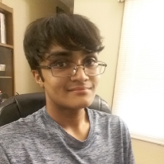

NIRV aims to provide digital solutions to individuals with neurological disorders by taking an interdisciplinary approach utilizing the fields of mathematics, computer science, communication studies, and neuroscience. Our ultimate goal is to create a digital community, beneficial to all, that serves to provide services and information
Founder: Aryan Waghmode
Hi, I'm Aryan Waghmode and I love all things Neuroscience! I'm interested in Applied
Mathematics and Neuroscience, specifically, in their applications to medical technology. After
completing high school, I plan to major in Computational Biology, with a focus in Neuroscience and
Medical Technology at a four-year institution.
Lead Developer: Abir Haque

As a hobbyist programmer, I delve into many professional technologies in my spare time. My technical skills range from cross-platform app development to web design. Please checkout my personal website and blog to find a bit more about me!: abirhaque.github.io
Tallia
Mental Health has always been important; however, the need for social isolation due to COVID-19 has
accentuated psychological distress amongst many. While there are many mental health tracers out
there, Tallia attempts to take a unique approach by creating a special tracker for those on the autism
spectrum. The intuitive tool informs guardians about their child's mental health, and encourages second
and third order questions to build communication skills, rather than surface level yesses or nos.
Email: abir.haque.usa@gmail.com
GitHub: NIR-V
Want to get in touch with NIRV directly? Send an email below: